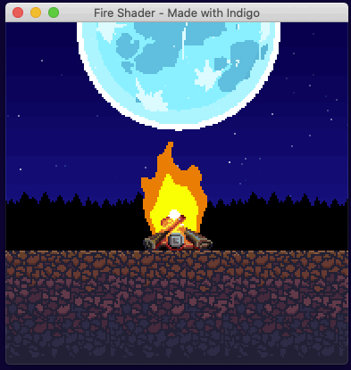
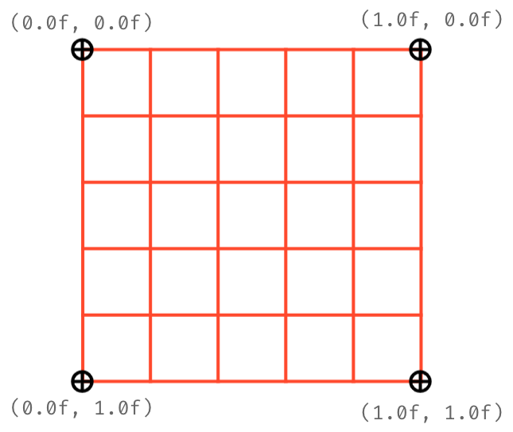
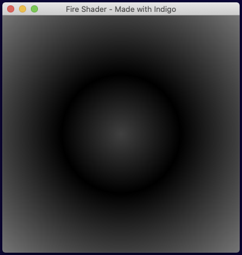
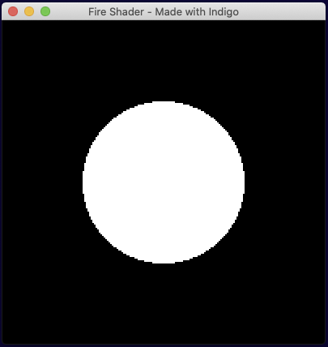
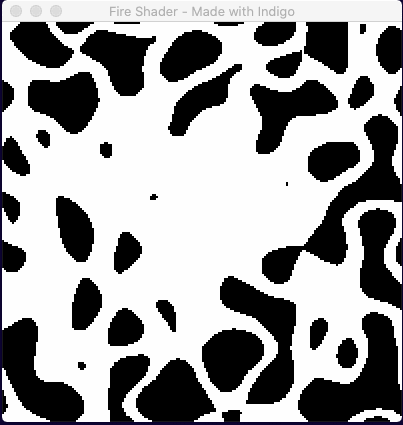
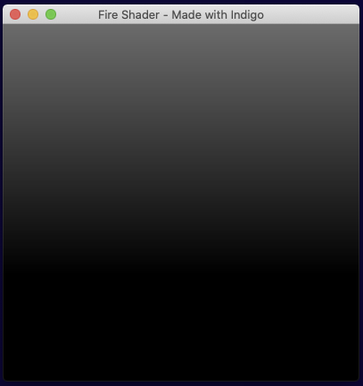
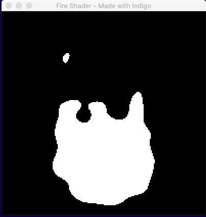
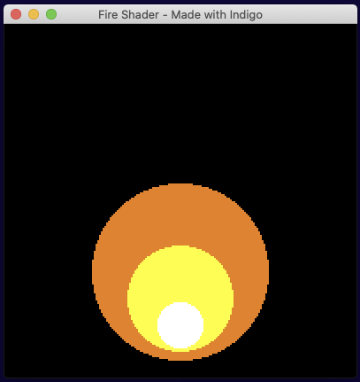
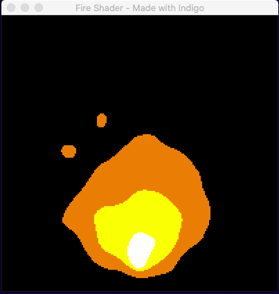
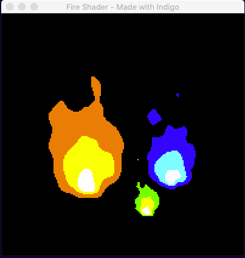

How to write a fire shader
In this how-to guide, we're going to look at one approach to writing a little shader that produces procedural flames. Here's one I made earlier:

We're first going to cover a few basic concepts needed for writing shaders in Indigo, then look at Signed Distance Functions, Noise, and finally bring it all together to make our fire effect.
There is a github repo that accompanies this how-to.
Small apology: I'm using lots of gif animations to show what is going on, and they mostly do not loop cleanly!
Indigo shader need-to-know's
Every game engine implements shaders in a slightly different way. This is because they are trying to bridge the gap between the various platforms they support, and the idiosyncrasies of how that particular engine works. Indigo is the same. Indigo uses GLSL 300 which is the WebGL 2.0 variation. The main gap Indigo has to bridge is between the Functional world of Scala and the procedural world of WebGL.
If you haven't already, you should go and read the "How to make a custom entity" guide first, because this how-to builds on that one. You will indeed need a custom entity to run your shader in, this is the one I'm using:
import indigo.*
import indigo.ShaderPrimitive.*
final case class Fire(
position: Point,
size: Size,
depth: Depth,
outer: RGB,
inner: RGB,
center: RGB,
offset: Double
) extends EntityNode[Fire]:
def flip: Flip = Flip.default
def ref: Point = Point.zero
def rotation: Radians = Radians.zero
def scale: Vector2 = Vector2.one
def withDepth(newDepth: Depth): Fire =
this.copy(depth = newDepth)
def eventHandler: ((Fire, GlobalEvent)) => Option[GlobalEvent] =
_ => None
def eventHandlerEnabled: Boolean = false
def toShaderData: ShaderData =
ShaderData(
Fire.shaderId,
UniformBlock(
UniformBlockName("FireData"),
Batch(
Uniform("OFFSET") -> float(offset),
Uniform("COLOR_OUTER") -> vec3(outer.r, outer.g, outer.b),
Uniform("COLOR_INNER") -> vec3(inner.r, inner.g, inner.b),
Uniform("COLOR_CENTER") -> vec3(center.r, center.g, center.b)
)
)
)
object Fire:
def orange(position: Point, size: Size): Fire =
Fire(position, size, Depth(1), RGB(1.0, 0.5, 0.0), RGB(1.0, 0.8, 0.0), RGB.White, 0.0d)
def blue(position: Point, size: Size): Fire =
Fire(position, size, Depth(1), RGB.Blue, RGB.Cyan, RGB.White, 0.0d)
def green(position: Point, size: Size): Fire =
Fire(position, size, Depth(1), RGB.Green, RGB.Yellow, RGB.White, 0.0d)
def apply(position: Point, size: Size): Fire =
orange(position, size)
val shaderId: ShaderId =
ShaderId("fire shader")
def shader(fragProgram: AssetName): EntityShader =
EntityShader
.External(ShaderId("fire shader"))
.withFragmentProgram(fragProgram)The Fire case class extends EntityNode meaning that we must supply a few values for it to work, but once we've done that we can add it to our scene. Here I'm using one of the helper functions in the companion object to add an orange fire:
def present(context: FrameContext[Unit], model: Unit, viewModel: Unit): Outcome[SceneUpdateFragment] =
Outcome(
SceneUpdateFragment(
Fire.orange(Point(60, 30), Size(70, 100))
)
)In point of fact, all the screen shots below are set to take up the whole screen: Fire.orange(Point(0, 0), Size(384, 384))
Important things to note about our custom entity:
- The
EntityShaderdefinition in theFirecompanion object. - The
toShaderDatamethod
Taking them in turn:
The EntityShader
def shader(fragProgram: AssetName): EntityShader =
EntityShader
.External(ShaderId("my fire shader"))
.withFragmentProgram(fragProgram)<div id="mdoc-html-run1" data-mdoc-js></div>
In our case, the fragment program is being loaded as a normal AssetType.Text, and by supplying the AssetName to an External entity shader, Indigo will use the contents of the text asset as the shader code.
This shader only uses a custom fragment shader. The simplest (although I have included our data struct) example of an external fragment shader written in file called shader.frag might be:
#version 300 es
// Above line must be the first thing in the file, and tells WebGL which GLSL version we're using.
precision mediump float; // Declare float precision
// Declares a constant we know Indigo provides so that we can use it and the linter can check it.
vec4 COLOR;
// Everything outside of this tag is ignored by Indigo!
//<indigo-fragment>
// A struct that mirrors the data in the `toShaderData` method, this is data sent from Indigo to the shader.
layout (std140) uniform FireData {
float OFFSET;
vec3 COLOR_OUTER;
vec3 COLOR_INNER;
vec3 COLOR_CENTER;
};
// The required fragment function setting the COLOR output variable to green.
void fragment() {
COLOR = vec4(0.0, 1.0, 0.0, 1.0);
}
//</indigo-fragment>The advantage of using an external file is that you can use a nice editor with GLSL syntax highlighting and linting. Everything outside the //<indigo-fragment> tags is ultimately ignored and omitted, but the values are used by GLSL linters to check your code. Any GLSL code you wish to use must be inside the tags.
You MUST remember to register your shader, like this (or under val shader: Set[Shader] in an Indigo sandbox game):
object Assets:
val fireProgram = AssetName("fire")
val assets: Set[AssetType] =
Set(AssetType.Text(fireProgram, AssetPath("assets/shader.frag")))
BootResult
.noData(GameConfig.default.withViewport(384, 384).withMagnification(2))
.withShaders(Fire.shader(Assets.fireProgram))
.withAssets(Assets.assets)<div id="mdoc-html-run2" data-mdoc-js></div>
The toShaderData method
Eventually we're going to need to tell our custom entity which shader to use (Fire.shaderId) and also supply values to the shader to change how it behaves. This is the final version, we're skipping to the end, but hopefully it should be fairly self explanatory:
val offset = 0.0d // Used to make different instances flicker out of sync
val center = RGB.White
val inner = RGB.Yellow
val outer = RGB.Red.mix(RGB.Yellow, 0.5)
def toShaderData: ShaderData =
ShaderData(
Fire.shaderId,
UniformBlock(
UniformBlockName("FireData"),
Batch(
Uniform("OFFSET") -> float(offset),
Uniform("COLOR_OUTER") -> vec3(outer.r, outer.g, outer.b),
Uniform("COLOR_INNER") -> vec3(inner.r, inner.g, inner.b),
Uniform("COLOR_CENTER") -> vec3(center.r, center.g, center.b)
)
)
)<div id="mdoc-html-run3" data-mdoc-js></div>
The main thing to note is that the UniformBlock aligns exactly to the struct found in the shader:
layout (std140) uniform FireData {
float OFFSET;
vec3 COLOR_OUTER;
vec3 COLOR_INNER;
vec3 COLOR_CENTER;
};At some point in the future it would be good to improve the type safety around the relationship across this interface, but for now, please take care. More information on how this works including the all important packing rules can be found in the Shaders Overview.
UVs
UV coordinates tell WebGL how to map a texture onto a mesh / 3d model.
The important thing to remember is that all coordinate systems in Indigo go from top left to bottom right, and shader UVs are no exception. This will be super important when we look at SDFs.

Flint & Tinder
To make a fire shader, we need a couple of raw materials:
- A way to draw a basic shape, in our case a circle.
- A way to distort that shape into an animated flame.
For this, we're going to use an SDF and Noise respectively.
Signed Distance Functions (SDFs)
An SDF, or Signed Distance Function, is simply a function that, for a given point (UV coordinate) returns the distance to the edge of a shape. Therefore, a distance of 0 means you are on the shape's border, a distance greater than 0 is outside the shape, and less than 0 is inside the shape.
The SDF for a circle might be the simplest SDF there is, so it's a good one to use to get the grips with the concept. Why not try a few values manually to get a feel for it?
It is important to note that SDFs work in "world space", that is, around the origin coordinate (0,0).
Here's the function we're going to use:
float sdfCircle(vec2 p, float r) {
return length(p) - r;
}Recall that our UVs are (0,0) top-left to (1,1) bottom-right, so when we call this function we must move our vec2 p back to the origin by subtracting 0.5, and supply a radius r between 0 and 0.5, like this:
sdfCircle(UV - 0.5, 0.25)The function returns a float, and if we plumb it into our COLOR output like this:
void fragment() {
float sdf = sdfCircle(UV - 0.5, 0.25);
COLOR = vec4(vec3(abs(sdf)), 1.0);
}Note the use of abs() - inside the circle is a negative number, but there's no such thing as a -1.0 red color value!
We get:

Not bad but we need a hard edged circle, so we will employ a function called step(). step() acts as a logic gate, it takes an input value and a boundary value. If the input is less than the boundary then it returns 1, else 0.
Conveniently, our SDF is less than 0 inside the circle! So if we change our function to:
void fragment() {
float sdf = sdfCircle(UV - 0.5, 0.25);
COLOR = vec4(step(sdf, 0.0));
}We get:

Perfect! Now for a bit of randomness...
Noise
It may come as a surprise, but GLSL does not include a noise function. For speed, we're going to borrow this one which is a form of perlin noise.
What we need is for our noise to be moving upwards to simulate rising heat. So we call our function as follows:
void fragment() {
float octaves = 8.0;
float noise = calcNoise(octaves * UV + vec2(0.0, TIME)).x;
COLOR = vec4(vec3(noise), 1.0);
}When you use gradient noise you need to specify the complexity, which I'm (possibly wrongly!) referring to as "octaves" above. To animate the noise, we add the TIME variable to the y component of the UV vec2. Then ultimately we use the x component value of the vec4 returned by the noise calculation, as this is the noise amount. (yzw are the derivatives.)
Note: TIME is an ever increasing value! We're using it rather naively here and it may create weird looking results eventually. A better solution may be to loop time to a known good range.
This gives us animated noise. Doesn't look very fluid-like yet, but it's all we need.

Making fire
If we crudely overlay the two components we have so far as a reminder of what we've done, we see the following:

Our next challenge is to find a way to combine the SDF circle with the noise. Recall that the SDF calculation makes use of a point p to decide if the we're inside or outside the circle. Our approach in essence will be to move point p by the noise amount.
Here is an exciting first attempt!
void fragment() {
float octaves = 8.0;
float noise = calcNoise(vec2(octaves * UV.x, octaves * UV.y + TIME)).x;
float sdf = sdfCircle((UV - 0.5) * (noise * 5.0), 0.25);
COLOR = vec4(step(sdf, 0.0));
}Note that the 5.0 in (noise * 5.0) is a bit of a magic number. There are a few of those in the final code that I tinkered with, justified on the basis of being aesthetically pleasing. In terms of business logic and domain modeling I'd normally find that rather uncomfortable, but let us not forget that we're making art here! Sometimes you just have to go with what (you think) looks good!

At first glance it looks like some sort of 80s fashion accident. On closer inspection there is a glob of white nearer the center... so maybe we just need to be more selective about how we move the point p?
If you can imagine a candle or torch flame, the deformation of the flame is not uniform. There is very little movement on the X-Axis (assuming no wind!), and similarly very little movement on the Y-Axis at the base of the flame. All the real movement happens at the top. How might we account for that?
Well the X-Axis is simple enough, we just need to multiply the amount of deformation by a small number, we'll use 0.1, i.e. a maximum of 10% wobble.
The Y-Axis is slight more tricky because we want to describe an area of effect, with the most movement happening in the top half of the shader. To do that, we're going to construct a gradient based on the UV values, like so:
float yGradient = clamp(0.7 - UV.y, 0.0, 1.0) * 0.6;
Drawn out, this looks as follows:

Figuring out how to draw the values your producing so that you can make sense of them is the equivalent of "print statement" debugging in shaders!
Putting it all together
If we take our previous code and combine it with the gradient and fixed values to dampen the movement, our code looks like this:
void fragment() {
float octaves = 8.0;
float noiseAmount = calcNoise(vec2(octaves * UV.x, octaves * UV.y + TIME)).x;
float yGradient = clamp(0.7 - UV.y, 0.0, 1.0) * 0.6;
vec2 sdfNoise = vec2(noiseAmount * 0.1, noiseAmount * 2.5 * yGradient);
vec2 p = (UV - vec2(0.5, 0.7)) + sdfNoise;
COLOR = vec4(step(sdfCircle(p, 0.25), 0.0));
}Note again a couple of magic numbers to make it look nicer! For example, I've moved the flame down the y-axis a bit by using UV - vec2(0.5, 0.7) instead of UV - 0.5.

It's very slow, but that's basically our flame! All we have to do is speed up time by multiplying the TIME variable and we're nearly there.
We do need to fix the colour though, and to do that we're just going to draw several SDF circles one on top of the other, with a bit of repositioning.

Put it all together and you get:

Notice that the three colors move in sync. This is because they are all using the same underlying noise value and means that, for example, you could never be in a situation where the yellow fully escaped the orange.
..and if we use our Fire entity's constructor to supply different values to the shader...

You may notice that the aspect ratio of the flames in the second animation is different. The UV coordinates (0,0) to (1,1) respect the scale, rotation and aspect ratio of the space on the screen described by the custom entity. So if you make a square space you get a round flame because the SDF makes a circle, but if you give it a width half the value of the height, the SDF becomes a tall ellipse and the result is a narrow flame.
Wrapping up
I hope you found that interesting and that you are feeling inspired to create some shader effects of your own. Don't forget to visit us on Discord to get help and show off your creations!
Finding out more about shaders
There are endless shader tutorials out there and this one barely scratches the surface, but the shader source code in the github repo makes reference to two sections of code shamelessly borrowed from master of shaders, Inigo Quilez:
Inigo Quilez also has a YouTube channel where he attempts to explain all this mathematical magic!
Here is some of his work. If you liked drawing with SDF's and noise, check this out! <script type="text/javascript" src="howto-fire-shader.md.js" defer></script> <script type="text/javascript" src="mdoc.js" defer></script>